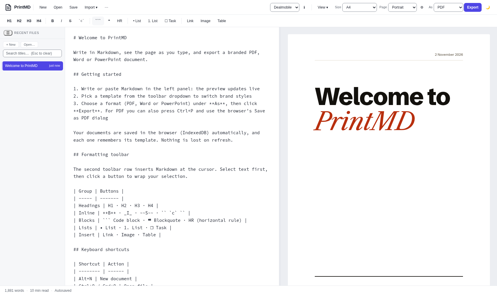
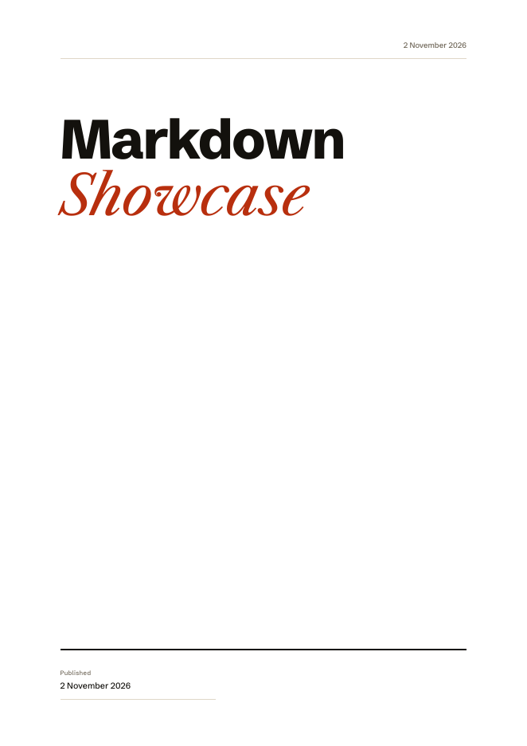
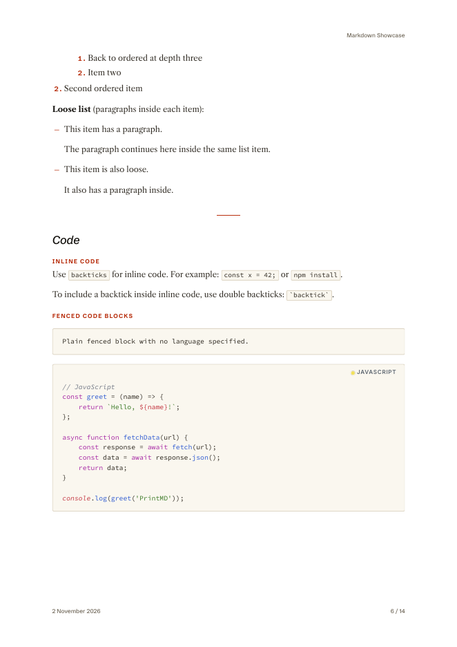
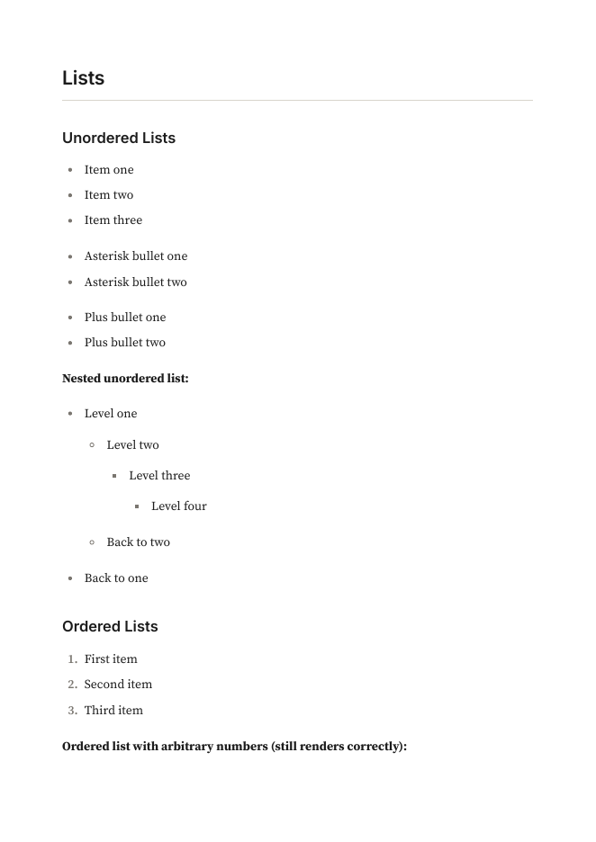
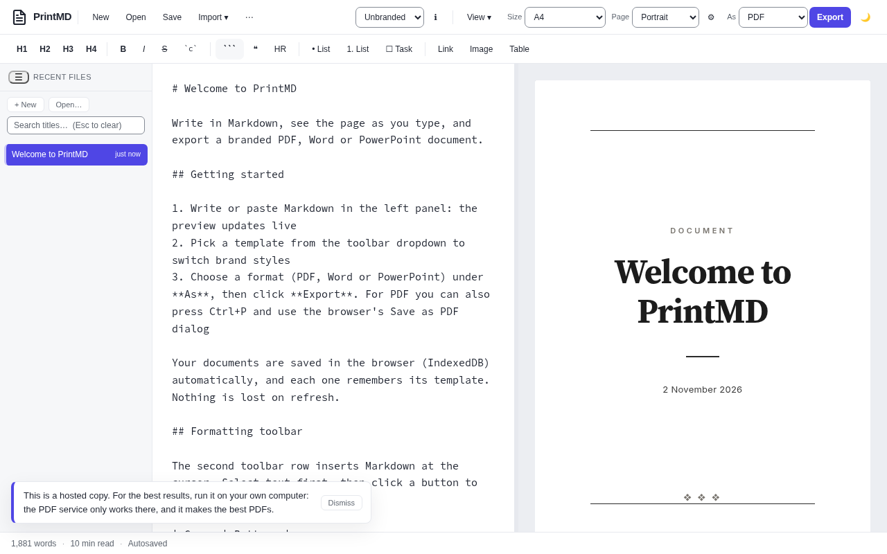

Markdown in. A PDF that looks designed out.
PrintMD is a Markdown editor with a live preview that exports print-quality PDF, Word and PowerPoint. A small PDF service on your own machine turns a file into a finished PDF with one command.
Why a tidy PDF still matters
A document is read by someone who did not watch you write it. The type, the spacing and where the page breaks fall decide whether they keep reading.
PrintMD handles those details for you, so the Markdown stays plain and the page still looks like someone cared.
Headings never end a page. Tables repeat their header row. Fonts are embedded, so the file looks the same everywhere.
Run it on your own computer for the best results. The editor works from a web server, but the PDF service renders with your copy of Chrome and only ever listens on 127.0.0.1. It refuses to run hosted, on purpose: your documents stay on your machine.
What it looks like
The editor on the left of the preview, and pages from a real export.





What you get
One plain-text file, one set of choices, three kinds of output.
Live preview
Write on the left, see the finished page on the right, in the template you picked. Light and dark theme.
PDF, Word, PowerPoint
Export the same Markdown three ways. The PDF is the careful one: embedded fonts, exact page size, sensible page breaks.
Page control
Any paper size or your own (100x150mm), one continuous page, fit wide tables, your own margin. Each document remembers its settings.
Import
Bring in a PDF, Word file, web page, EPUB or Google Drive document as Markdown and tidy it up.
Good code blocks
Over 190 languages coloured the way an editor does it, with a small language label. Long lines wrap in print.
Your documents stay yours
Saved in the browser, with a crash buffer and optional sync to a file on disk. No account, no upload, no tracking.
Templates
Two to start with. Adding another is one file.
Unbranded unbranded
A classic, quiet document with a title page. The default, and the smallest working example if you want to write your own.
Dealmobile dealmobile
A magazine article. Heavy grotesque headlines over a Caslon text face, one red accent, a running head and foot, and no logo.
Run it
The editor needs a web server and Chrome or Edge. The PDF service needs Node 22.
git clone <your copy of the repository> printmd cd printmd python3 -m http.server 8080 # then open http://localhost:8080
npm --prefix server ci npx --prefix server playwright install chromium npm --prefix server run start:local curl -s -X POST 'http://127.0.0.1:8787/api/v1/render?template=dealmobile' \ -H 'Content-Type: text/markdown' --data-binary @notes.md -o notes.pdf
The PDF service is not available when hosted. It will not start on anything but 127.0.0.1.
From the blog
Why it exists and how the parts work.
- Why I built PrintMDNotes that look designed, without a word processor.
- Print-quality PDFs from a browserWhat it takes for a browser's PDF to hold up on paper.
- Custom sizes, one long page and fit to widthThe page options and the edge cases behind them.
- A PDF service that only runs on your machineWhy the service refuses to be hosted, and how it stays safe.